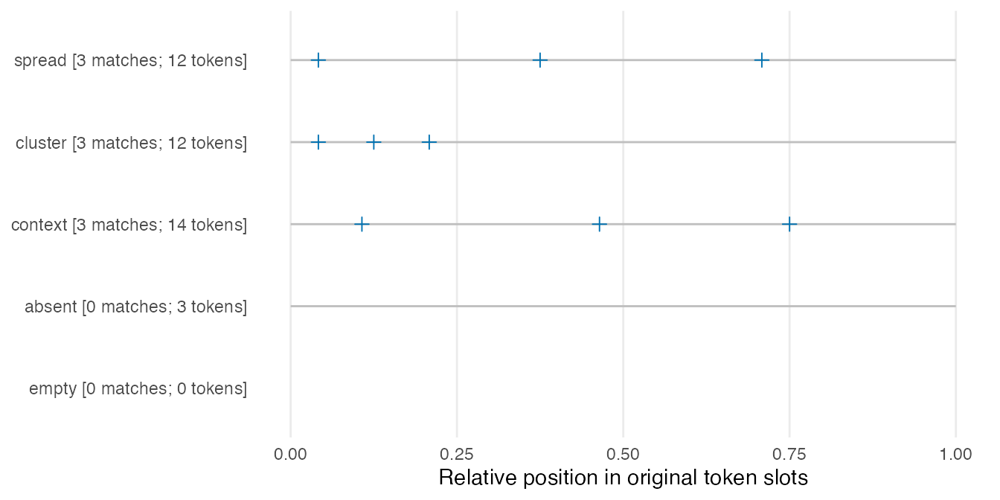
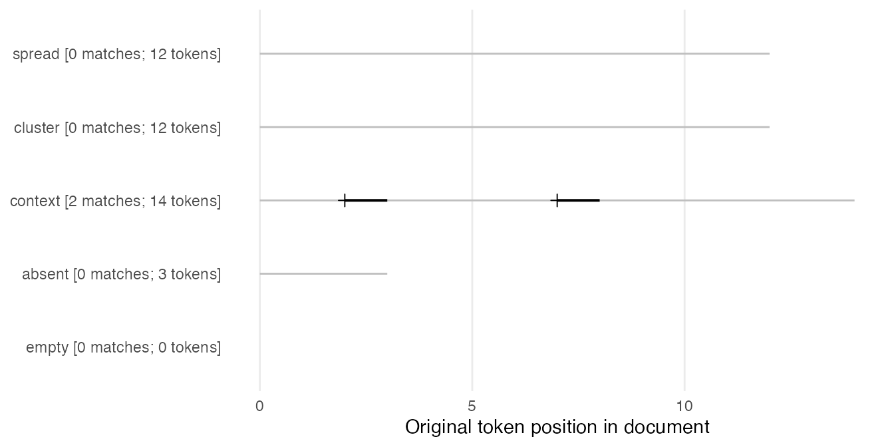

Search words and phrases, then inspect their distribution
Source:vignettes/concordance-and-dispersion.Rmd
concordance-and-dispersion.RmdThree occurrences can be spread through a document or concentrated near its beginning. A frequency table alone does not show that difference. This guide first finds words or phrases in their original contexts, then uses the same saved occurrences for context sorting, position plots and a within-document dispersion measure. It keeps the search unit, excluded positions and denominators visible so that a changed search can be explained.
Use ldfreq 0.3.0.9009 or later and optional quanteda >=
4.5.0; plotting also needs ggplot2. Install
these packages before running the guide. The four helpers live in
examples/concordance.R and are explicitly sourced,
installed example code. They are not exported package functions. The
example inputs and lemmas are authored for hand checking; they are not
learner observations or an evaluation of an annotation system.
Prepare complete annotations
demo <- new.env(parent = globalenv())
sys.source(system.file("examples", "concordance-demo.R",
package = "ldfreq", mustWork = TRUE), demo)
helper <- demo$helper
annotations <- demo$annotations
knitr::kable(annotations$segments[c("document_id", "segment_id", "text")], row.names = FALSE)| document_id | segment_id | text |
|---|---|---|
| spread | s1 | learn a b c learn d e f learn g h i |
| cluster | s1 | learn learn learn a b c d e f g h i |
| context | s1 | We learn new words. They learned new words. |
| context | s2 | learn very new words |
| absent | s1 | read a book |
| empty | s1 |
spread and cluster each contain 12 original
tokens and three instances of learn, at positions 1/5/9 and
1/2/3 respectively. context has two segments and includes
learned; absent has no matching word and
empty has no tokens.
For your own data, supply an unchanged
lexdiv_import_annotations() result:
| Input | Required information |
|---|---|
tokens |
One row per original token: document_id,
segment_id, consecutive token_index, original
surface; optional character fields such as
lemma
|
segments |
Document and segment IDs plus original text, in the
intended document order; include an empty segment for an empty
document |
provenance |
Language, analyzer/version, dictionary/version, unit and normalization declarations |
The importer checks complete surface alignment and supplies segment-local character spans. Import before excluding punctuation or other tokens. Only whitespace may fall between supplied surfaces. The search rejects modified import results: edit the original input and import it again. A filtered lexical token vector is not a complete annotation table. See external annotations for analyzer recipes and annotated corpora for the existing corpus adapters. No analyzer or dictionary is downloaded by this guide.
For a short English text without supplied annotations, the following explicit quanteda tokenization recipe can prepare complete surfaces. The alignment check will reject text that this tokenizer changes or leaves partly uncovered; inspect the tokens and adjust the chosen annotation route, rather than dropping the check. Declare sentence/turn segments first if matches must respect them.
raw_segments <- data.frame(document_id = c("my_text", "empty"),
segment_id = "s1", text = c("We learn new words. We learned them.", ""))
raw_tokens <- as.list(quanteda::tokens(raw_segments$text, what = "word",
remove_punct = FALSE, remove_symbols = FALSE, remove_numbers = FALSE,
remove_url = FALSE, remove_separators = TRUE, split_hyphens = FALSE))
raw_rows <- do.call(rbind, lapply(seq_along(raw_tokens), function(i) data.frame(
document_id = rep(raw_segments$document_id[i], length(raw_tokens[[i]])),
segment_id = rep(raw_segments$segment_id[i], length(raw_tokens[[i]])),
token_index = seq_along(raw_tokens[[i]]), surface = raw_tokens[[i]])))
raw_annotations <- lexdiv_import_annotations(raw_rows, raw_segments,
list(language = "en", analyzer = "quanteda-tokens-word",
analyzer_version = as.character(utils::packageVersion("quanteda")),
dictionary = "none", dictionary_version = "not-applicable",
unit = "word-tokenizer-with-punctuation", normalization = "none",
settings = paste("remove_punct=FALSE; remove_symbols=FALSE; remove_numbers=FALSE;",
"remove_url=FALSE; remove_separators=TRUE; split_hyphens=FALSE")))
raw_search <- helper$concordance_search(raw_annotations,
list(learning = "^learn(ed)?$"), valuetype = "regex")
raw_search$counts
#> document_id query_id occurrences
#> 1 my_text learning 2
#> 2 empty learning 0This recipe preserves punctuation as original positions and adds no lemmas. It treats each row as one searchable segment, so it does not impose sentence boundaries within that row. Save the original texts and tokenizer settings.
Choose a search unit and pattern
keep <- !annotations$tokens$surface %in% c(".", "very")
search <- helper$concordance_search(annotations,
queries = list(word = "learn", phrase = c("learn", "new"), absent = "unlisted"),
term_col = "lemma", valuetype = "fixed", case_insensitive = FALSE,
keep = keep, window = 2L)
knitr::kable(search$counts, row.names = FALSE)| document_id | query_id | occurrences |
|---|---|---|
| spread | word | 3 |
| cluster | word | 3 |
| context | word | 3 |
| absent | word | 0 |
| empty | word | 0 |
| spread | phrase | 0 |
| cluster | phrase | 0 |
| context | phrase | 2 |
| absent | phrase | 0 |
| empty | phrase | 0 |
| spread | absent | 0 |
| cluster | absent | 0 |
| context | absent | 0 |
| absent | absent | 0 |
| empty | absent | 0 |
knitr::kable(search$occurrences[c("query_id", "document_id", "segment_id",
"pre", "keyword", "post")], row.names = FALSE)| query_id | document_id | segment_id | pre | keyword | post |
|---|---|---|---|---|---|
| word | spread | s1 | learn | a b | |
| word | spread | s1 | b c | learn | d e |
| word | spread | s1 | e f | learn | g h |
| word | cluster | s1 | learn | learn learn | |
| word | cluster | s1 | learn | learn | learn a |
| word | cluster | s1 | learn learn | learn | a b |
| word | context | s1 | We | learn | new words |
| word | context | s1 | . They | learned | new words |
| word | context | s2 | learn | very new | |
| phrase | context | s1 | We | learn new | words. |
| phrase | context | s1 | . They | learned new | words. |
Each named list element is one query ID. A character vector within it
specifies consecutive token patterns: c("learn", "new")
searches two tokens, while "learn new" is one literal token
pattern and is not split automatically. term_col selects
the supplied surface, lemma or another character annotation. The
displayed keyword and context always come from the original surface
text. Thus the lemma query learn finds both
learn and learned here.
Matching follows quanteda’s pattern rules and value types:
valuetype |
Example | Meaning |
|---|---|---|
"fixed" |
"learn" |
Literal token matching with the declared case policy |
"glob" |
"learn*" |
* matches zero or more characters; ?
matches one |
"regex" |
"^learn(ed)?$" |
A regular expression applied to each token; anchors restrict it to a whole token |
wildcard <- helper$concordance_search(annotations,
list(forms = "learn*", phrase = c("learn*", "new")), valuetype = "glob", keep = keep)
regular <- helper$concordance_search(annotations,
list(forms = "^learn(ed)?$"), valuetype = "regex", keep = keep)
knitr::kable(wildcard$counts, row.names = FALSE)| document_id | query_id | occurrences |
|---|---|---|
| spread | forms | 3 |
| cluster | forms | 3 |
| context | forms | 3 |
| absent | forms | 0 |
| empty | forms | 0 |
| spread | phrase | 0 |
| cluster | phrase | 0 |
| context | phrase | 2 |
| absent | phrase | 0 |
| empty | phrase | 0 |
Regex is applied to tokens, not to the raw text. An
unanchored learn regex also matches unlearn.
Fixed matching is not a byte-identity check: quanteda may match
canonically equivalent Unicode spellings. Original surface strings and
character spans remain unchanged, and quanteda/stringi/ICU versions are
saved. The existing exact phrase-review
recipe uses its own stricter surface comparison; its decisions and
counts are unchanged.
Every contiguous match is retained, including overlapping phrases and
identical patterns under different query IDs. Do not sum different query
counts as a unique-token coverage measure. Matches and context stop at
supplied segment boundaries; sentence boundaries apply only when
represented as segments. Excluded tokens and missing/blank search terms
leave gaps and cannot complete a phrase, including a wildcard phrase.
The example therefore does not turn learn very new into
learn new after excluding very.
knitr::kable(search$documents, row.names = FALSE)| document_id | source_tokens | kept_tokens | searchable_tokens | missing_terms |
|---|---|---|---|---|
| spread | 12 | 12 | 12 | 0 |
| cluster | 12 | 12 | 12 | 0 |
| context | 14 | 11 | 11 | 0 |
| absent | 3 | 3 | 3 | 0 |
| empty | 0 | 0 | 0 | 0 |
source_tokens counts all original positions.
kept_tokens applies keep;
searchable_tokens also requires a nonblank search term.
missing_terms counts kept positions with no usable term.
None of these choices renumbers positions. The context window counts
original positions, so excluded punctuation can still appear as context.
The default max_cells = 1e6 limits original token slots,
document-query count cells and the match/context allocation separately;
it is not a memory-size guarantee. Reduce the saved window or split
intended searches before raising it for a larger input.
Sort by the nearest context words
right_sorted <- helper$concordance_sort(search, side = "right", depth = 2L)
left_sorted <- helper$concordance_sort(search, side = "left", depth = 2L)
knitr::kable(right_sorted[c("query_id", "document_id", "pre", "keyword", "post")], row.names = FALSE)| query_id | document_id | pre | keyword | post |
|---|---|---|---|---|
| word | spread | learn | a b | |
| word | cluster | learn learn | learn | a b |
| word | spread | b c | learn | d e |
| word | spread | e f | learn | g h |
| word | cluster | learn | learn | learn a |
| word | cluster | learn | learn learn | |
| word | context | We | learn | new words |
| word | context | . They | learned | new words |
| word | context | learn | very new | |
| phrase | context | We | learn new | words. |
| phrase | context | . They | learned new | words. |
The saved left_tokens and right_tokens list
columns start with the nearest surface token. Left sorting uses L1, then
L2; right sorting uses R1, then R2. It does not alphabetize the complete
displayed pre string. Ties retain query order, supplied
segment order and original match position. Absent context sorts last at
each depth. Sorting uses UTF-8 radix order, independent of locale,
rather than language-specific collation. ignore_case = TRUE
case-folds only the sort keys. Request a depth no larger than the saved
window.
from/to are segment token positions.
document_from/document_to concatenate original
segment slots in supplied order, without inventing separator tokens.
start/end are 1-based, inclusive
Unicode-codepoint positions within the original
segment, not byte offsets or positions in a newly joined text.
occurrence_id identifies a match within the saved search
condition. Changing queries, settings or source creates a different
search identity; sorting does not.
Plot those same occurrences
positions <- helper$concordance_positions(search, "word")
positions
Each plus marks the original start position. A horizontal stroke also shows the matched span for a multi-token query. Document labels retain match and original token counts, including zero-match and empty documents. An empty document has no occurrence or text-length line. This is an occurrence plot, not a density estimate or a dispersion statistic.
Relative coordinates are
(position - 0.5) / source_tokens, the centers of the
original token slots on a common 0–1 scale. Exclusions do not shorten
the axis. Use relative = FALSE for a shared absolute
token-position axis:
helper$concordance_positions(search, "phrase", relative = FALSE, monochrome = TRUE)
stopifnot(identical(positions$data$occurrence_id,
search$occurrences$occurrence_id[search$occurrences$query_id == "word"]))The plot reads the saved table without retokenization or a new
search. Its data retains occurrence IDs and coordinates for
inspection. Colour is the default; monochrome = TRUE keeps
the same marks and axes. Add figure numbering, titles and explanatory
notes in the surrounding manuscript.
Calculate within-document DP
This recipe implements the unnormalized DP definition in Gries (2008, Section 3):
Here parts = K divides each document’s original
token slots into fixed intervals, with part index
floor((position - 1) * K / N) + 1 for original length
N. Within each part, f_j counts saved matches
and n_j counts searchable tokens. Exclusions and missing
terms can make these exposure counts unequal. The result retains
original interval bounds, both counts and both shares. A larger value
indicates greater departure from the declared exposure distribution; it
does not necessarily mean a geometrically narrower cluster.
dispersion <- helper$concordance_dispersion(search, "word", parts = 3L)
knitr::kable(dispersion$documents[c("document_id", "searchable_tokens", "occurrences",
"DP", "status", "missing_reason")], digits = 4, row.names = FALSE)| document_id | searchable_tokens | occurrences | DP | status | missing_reason |
|---|---|---|---|---|---|
| spread | 12 | 3 | 0.0000 | ok | NA |
| cluster | 12 | 3 | 0.6667 | ok | NA |
| context | 11 | 3 | 0.0606 | ok | NA |
| absent | 3 | 0 | NA | missing | no_matches |
| empty | 0 | 0 | NA | missing | no_searchable_tokens |
knitr::kable(subset(dispersion$parts, document_id %in% c("spread", "cluster"))[
c("document_id", "part", "searchable_tokens", "occurrences", "expected_share", "observed_share")],
digits = 3, row.names = FALSE)| document_id | part | searchable_tokens | occurrences | expected_share | observed_share |
|---|---|---|---|---|---|
| spread | 1 | 4 | 1 | 0.333 | 0.333 |
| spread | 2 | 4 | 1 | 0.333 | 0.333 |
| spread | 3 | 4 | 1 | 0.333 | 0.333 |
| cluster | 1 | 4 | 3 | 0.333 | 1.000 |
| cluster | 2 | 4 | 0 | 0.333 | 0.000 |
| cluster | 3 | 4 | 0 | 0.333 | 0.000 |
For spread, all three parts contain four searchable
tokens and one match: both shares are (1/3, 1/3, 1/3), so
DP is 0. For cluster, the match shares are
(1, 0, 0) with the same exposure shares, so DP is
(|1 - 1/3| + |0 - 1/3| + |0 - 1/3|) / 2 = 2/3.
This is within-document, single-token-query DP,
including a regex/glob that selects a class of individual tokens. It
does not compare the distribution across documents. Multi-token queries
are rejected for DP because they require a separately defined
phrase-opportunity denominator; their position plots remain available.
No small-sample, maximum-value or frequency correction is applied. Total
concentration in a part with exposure share s gives
1 - s, not necessarily 1. DP depends on frequency and
partition choice; it is neither a significance test nor a proficiency
measure.
No searchable tokens or no matches yield NA with a
distinct missing_reason. The recipe also requires at least
two parts with positive searchable exposure; otherwise it returns
fewer_than_two_nonempty_parts. A single match is computable
when that requirement is met, but its value largely reflects which part
contains it. These missing-value rules and the partition are explicit
choices of this recipe. Report frequency, counts, boundaries and
exclusions beside DP; do not compare different query or partition
policies silently.
Save and reopen the complete analysis
record <- list(search = search, sorted = right_sorted, dispersion = dispersion,
sort = list(side = "right", depth = 2L, ignore_case = FALSE),
session = utils::sessionInfo())
saved <- tempfile(fileext = ".rds") # Choose a persistent filename for research data.
saveRDS(record, saved)
restored <- readRDS(saved)
stopifnot(identical(restored, record),
identical(helper$concordance_sort(restored$search, "right", 2L), restored$sorted),
identical(helper$concordance_dispersion(restored$search, "word", 3L), restored$dispersion),
identical(restored$dispersion$occurrence_ids,
restored$search$occurrences$occurrence_id[restored$search$occurrences$query_id == "word"]))
unlink(saved)In a fresh R session, source examples/concordance.R and
read the RDS before calling these helpers. The saved search includes
complete source annotations, queries, selection masks, versions, counts
and occurrence IDs. Integrity checks reject edited saved results; rerun
the search from newly imported source when changing an input. These
hashes check accidental changes, not authorship. A flattened CSV cannot
retain the source object, settings and context-vector columns; use it
only as a display or exchange table beside the complete RDS.
To connect documents to writers, tasks and occasions, join their
retained document_id to your explicit metadata map; see the repeated-observation guide.
KWIC rows and overlapping matches are not independent participants. This
guide checks search and calculation behavior; it does not establish an
inferential model or validate a language-learning outcome.
Gries, S. Th. (2008). Dispersions and adjusted frequencies in corpora. International Journal of Corpus Linguistics, 13(4), 403–437. https://doi.org/10.1075/ijcl.13.4.02gri